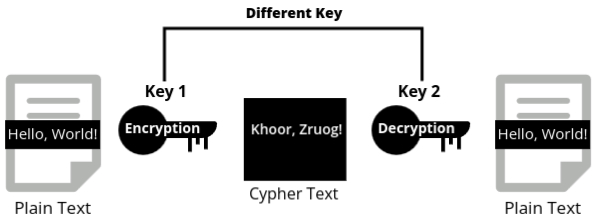

Introduction to Cryptography
Cryptography is the science of securing communication by transforming readable data (plain text) into an unreadable form (cipher text). The goal is to ensure that only authorized users can access or understand the information, protecting it from unauthorized access. Cryptography plays a key role in securing data in our everyday lives, from email communication to online banking, ensuring that private information remains confidential and secure.
Security Goals
- These goals define what cryptographic methods aim to achieve when protecting data. Without these goals, any effort to protect information becomes ineffective.
The three main security goals are confidentiality, integrity, and availability.
- Confidentiality:
- The primary goal of confidentiality is to prevent unauthorized access to data. Only those who have the right permissions should be able to view the information.
- Example: Your password is encrypted when you log in to your email, ensuring that only you and the system can access it.
- Integrity:
- Integrity ensures that the data remains unchanged and accurate. Any unauthorized modifications to data should be detectable, and only authorized users should be able to make changes.
- Example: When sending important documents via email, the integrity goal ensures the document isn’t altered during transmission.
- Availability:
- Availability ensures that authorized users can access the data or services when needed. Attacks that limit access to resources can disrupt business operations and communication.
- Example: During a denial-of-service (DoS) attack, users may be unable to access a website because the server is overwhelmed with traffic.
Classification of Cryptographic Attacks
Cryptographic attacks refer to attempts by attackers to compromise or break cryptographic systems. These attacks can be classified based on the security goal they target, the type of damage they cause, or the mathematical methods they exploit.
1) Attacks Based on Security Goals They Impact
Each cryptographic attack is designed to target specific security goals, threatening the confidentiality, integrity, or availability of data.
1. Confidentiality Attacks
-
Snooping: Unauthorized access to data without modifying it. The attacker reads
or monitors the information.
Example: Intercepting unencrypted emails to steal sensitive information like PINs. -
Traffic Analysis: Monitoring traffic patterns (e.g., size, frequency) to gather
insights, even if data is encrypted.
Example: Monitoring encrypted military communications to predict troop movements.
2. Integrity Attacks
-
Modification: Altering the contents of a message or file. Unauthorized changes
to data violate its integrity.
Example: Modifying a bank transaction to transfer money to the attacker’s account. -
Masquerading (Spoofing): The attacker pretends to be someone else to gain
unauthorized access.
Example: An attacker impersonates a system administrator to steal sensitive data. -
Replay Attack: Re-transmitting a previously captured message to trick the
system into accepting it as legitimate.
Example: Re-sending a captured financial transaction to duplicate an authorized payment. -
Repudiation: Denying having performed an action in communication, often leading
to disputes.
Example: A person denies having made an online payment, even though the transaction was completed.
3. Availability Attacks
-
Denial of Service (DoS): Preventing legitimate users from accessing services by
overwhelming the system with excessive requests.
Example: Overloading a server with traffic, making a website unavailable to users.
2) Attacks Based on the Type of Damage
Cryptographic attacks can also be classified based on whether they involve directly damaging data or simply stealing information without modification.
- Active Attacks:
- In active attacks, the attacker aims to modify or disrupt data and services, causing harm to the system.
- Example: An attacker intercepting and altering a message in transit to change the meaning.
- Security Goals Compromised: Integrity and Availability.
- Passive Attacks:
- In passive attacks, the attacker’s goal is to observe and collect information without altering or disrupting the data.
- Example: Monitoring network traffic to capture unencrypted usernames and passwords.
- Security Goal Compromised: Confidentiality.
3) Attacks Based on Mathematical Viewpoint (Cryptographic Attacks)
Cryptographic attacks can also exploit mathematical flaws in cryptographic algorithms. These types of attacks are more technical and focus on breaking the encryption itself.
- Cryptoanalytic Attacks:
- These attacks use mathematical techniques such as statistical analysis to find vulnerabilities in cryptographic algorithms and deduce the secret key.
- Example: Factoring large prime numbers to break the RSA encryption algorithm.
- Non-cryptoanalytic Attacks:
- These attacks don’t target the mathematical weaknesses of cryptography but exploit other vulnerabilities, such as poor implementation or human error.
- Example: Social engineering attacks where attackers trick users into revealing their passwords.
Cryptoanalytic Attacks
Cryptoanalytic attacks focus on analyzing the encrypted data (ciphertext) to extract information or break the encryption without knowing the key.
- Cipherli-only Attack:
- In this attack, the attacker only has access to the ciphertext and tries to deduce the encryption key or original message.
- Example: Intercepting encrypted emails and trying to decrypt them using statistical methods.
- Known-plaintext Attack:
- Here, the attacker has access to both the plaintext and its corresponding ciphertext, allowing them to analyze how the encryption process works.
- Example: If an attacker knows a common word in a message, they can use that to decrypt other parts of the message.
- Chosen-plaintext Attack:
- The attacker chooses specific plaintexts and encrypts them to study how the algorithm works.
- Example: Encrypting the word "password" using different encryption methods to study patterns in the ciphertext.
- Chosen-ciphertext Attack:
- The attacker can select specific ciphertexts and attempt to decrypt them, using the results to understand the encryption system.
- Example: Injecting fake ciphertexts into a system to gather insights into its decryption process.
Non-cryptoanalytic Attacks
Non-cryptoanalytic attacks focus on vulnerabilities outside the cryptographic algorithms, such as poor security practices or flaws in the system setup.

Mathematics of Cryptography
introductory paragraph
Integer Arithmetic
Integer arithmetic refers to mathematical operations performed on integers (whole numbers), which include positive numbers, negative numbers, and zero. Unlike floating-point arithmetic, which can handle fractions and decimals, integer arithmetic only deals with whole numbers.
- Set of Integers: The set of integers is denoted by Z, and
it includes all integral numbers from negative infinity to positive infinity. This set can
be written as:
Z = { ..., -2, -1, 0, 1, 2, ... }
Division in Integer Arithmetic
When dividing two integers, we may not always get a whole number. Instead, we can express the division in terms of quotient and remainder. For two integers a (the dividend) and n (the divisor), the operation can be described by the equation:
- a = q × n + r
- Where:
- a = dividend
- n = divisor
- q = quotient
- r = remainder
- The remainder r will always be less than the divisor n and greater than or equal to zero.
Example:
- 100 divided by 9:
- a = 100, n = 9
- The quotient q is 11, and the remainder r is 1.
- 100 = 11 × 9 + 1
- 122 divided by 11:
- a = 122, n = 11
- The quotient q is 11, and the remainder r is 1.
- 122 = 11 × 11 + 1
Restrictions in Integer Arithmetic Division
- The divisor n must be a positive integer: n > 0
- The remainder r must be non-negative: r ≥ 0
These restrictions ensure consistency in how we define quotient and remainder.
Greatest Common Divisor (GCD)
The greatest common divisor (GCD) of two integers a and b is the largest integer that divides both a and b without leaving a remainder. It helps in simplifying ratios or fractions and is essential in cryptography for algorithms like RSA.
- For example, the GCD of 24 and 18 is 6, because 6 is the largest integer that divides both numbers evenly.
Euclidean Algorithm
The Euclidean Algorithm is a method to compute the GCD of two integers. It is based on the principle that the GCD of two numbers does not change if the larger number is replaced by its remainder when divided by the smaller number.
Steps:
- Divide a by b, and get the remainder r.
- Replace a with b, and b with r.
- Repeat the process until the remainder becomes zero.
- The last non-zero remainder is the GCD.
Example:
- Let’s compute the GCD of 252 and 105 using the Euclidean Algorithm:
- 252 ÷ 105 = 2 (quotient) with a remainder of 42 (i.e., 252 = 2 × 105 + 42)
- 105 ÷ 42 = 2, remainder 21
- 42 ÷ 21 = 2, remainder 0
- The GCD is 21.
Modular Arithmetic
Modular arithmetic is a system of arithmetic for integers, where numbers "wrap around" upon reaching a certain value—the modulus. This is widely used in cryptography, computer science, and number theory.
In modular arithmetic, we work with the remainder of a division operation. If we divide a number by another (called the modulus), the remainder is the result of the modular operation. The notation is:
- a ≡ b (mod n)
- Where:
- a is the dividend (the number we are dividing)
- b is the remainder
- n is the modulus (the number by which we are dividing)
Understanding Modular Arithmetic
- a ≡ b (mod n) means that when a is divided by n, the remainder is b.
- If two numbers have the same remainder when divided by a modulus n, they are considered congruent.
Example:
- 7 ≡ 3 (mod 4):
- When you divide 7 by 4, the quotient is 1 and the remainder is 3.
- 10 ≡ 1 (mod 3):
- When you divide 10 by 3, the quotient is 3 and the remainder is 1.
- 15 ≡ 0 (mod 5):
- When you divide 15 by 5, there is no remainder, so it is congruent to 0 mod 5.
Applications in Cryptography
Modular arithmetic plays a crucial role in cryptography. It is used in algorithms like RSA, Diffie-Hellman, and elliptic curve cryptography, which rely on the difficulty of reversing modular exponentiation without knowing the private key.
Congruence
Congruence is a fundamental concept in modular arithmetic that deals with the relationship between two integers. Two numbers are said to be congruent modulo a number if they leave the same remainder when divided by that number.
The notation for congruence is:
- a ≡ b (mod n)
- Where:
- a and b are integers
- n is the modulus
- If a ≡ b (mod n), it means that when both a and b are divided by n, they leave the same remainder.
Understanding Congruence
- If two numbers are congruent modulo n, their difference is divisible by n.
- a ≡ b (mod n) implies that (a - b) is divisible by n, meaning a - b = kn, where k is an integer.
Example of Congruence:
- 12 ≡ 5 (mod 7):
- When you divide both 12 and 5 by 7, the remainder is the same (5).
- Also, 12 - 5 = 7, which is divisible by 7.
- 20 ≡ 2 (mod 6):
- When 20 and 2 are divided by 6, both give the same remainder (2).
- Additionally, 20 - 2 = 18, which is divisible by 6.
Congruence and Cryptography:
- Congruence plays a key role in cryptographic algorithms, especially in public-key cryptography like RSA, where large integers and modular exponentiation are used.
- In RSA encryption, for instance, the message is encrypted using the equation C ≡ M^e (mod n), and the decryption follows a similar form with modular arithmetic.
Matrices
A matrix is a rectangular array of numbers or symbols arranged in rows and columns. It is a fundamental concept in mathematics used for various applications, including solving systems of linear equations, transformations in geometry, and cryptography.
Basic Terminology:
- Order of a Matrix: The size of a matrix is described by the number of rows and columns it has. A matrix with m rows and n columns is called an m x n matrix.
- Element of a Matrix: Each value in the matrix is called an element, usually denoted by aij, where i is the row number and j is the column number.
Types of Matrices:
- Square Matrix: A matrix with the same number of rows and columns (e.g., 3x3 matrix).
- Identity Matrix: A square matrix where all the diagonal elements are 1, and all other elements are 0.
- Zero Matrix: A matrix where all elements are 0.
- Diagonal Matrix: A matrix where all non-diagonal elements are 0.
- Transpose of a Matrix: The matrix obtained by switching the rows and columns of a given matrix.
Matrices in Cryptography:
- Matrices are often used in cryptography, particularly in algorithms like the Hill Cipher, where they are employed to encrypt and decrypt messages using matrix multiplication.
Types of Cryptography
Cryptography is the practice of securing information by transforming it into an unreadable format. There are several types of cryptographic techniques, each serving different purposes and utilizing various methods to ensure data security. The primary types of cryptography include symmetric cryptography, asymmetric cryptography, and hash functions. Each type has its own unique features and applications in securing digital communication and data.
Symmetric Cryptography
Symmetric cryptography, also known as secret key cryptography or private key cryptography, is a straightforward encryption technique that uses a single key for both encryption and decryption. This means that the same key is used to transform plaintext into ciphertext and vice versa. The security of this method relies on keeping the key secret between the communicating parties.
The most popular symmetric key cryptography system is DES (Data Encryption Standard), which has been widely used for securing data. However, due to advancements in computational power, DES has been largely replaced by more secure algorithms like AES (Advanced Encryption Standard).

Asymmetric Cryptography
Asymmetric cryptography, also known as public key cryptography, utilizes two different keys for encryption and decryption. One key, known as the public key, is shared openly and can be used by anyone to encrypt data. The second key, known as the private key, is kept secret by the owner and is used to decrypt the data that was encrypted with the corresponding public key.
- Public Key: This key is widely distributed and available to anyone. It is used to encrypt data.
- Private Key: This key is kept confidential by the owner. It is used to decrypt data that was encrypted with the corresponding public key.
Note: A message encrypted using a public key can only be decrypted using the corresponding private key. Conversely, a message encrypted with a private key can only be decrypted using the corresponding public key.
Popular asymmetric key algorithms include RSA (Rivest–Shamir–Adleman), DSA (Digital Signature Algorithm), and elliptic curve cryptography (ECC).
Hash Functions
Hash functions are cryptographic algorithms that generate a fixed-size output (hash value) from variable-size input data. The primary purpose of a hash function is to ensure data integrity by producing a unique hash value for unique input data. Even a small change in the input data will result in a significantly different hash value, making hash functions useful for detecting alterations or corruption in data.
- Hash functions are one-way functions, meaning they cannot be reversed to retrieve the original data from the hash value.
- Common hash functions include MD5 (Message Digest Algorithm 5), SHA-1 (Secure Hash Algorithm 1), and SHA-256 (Secure Hash Algorithm 256).

Example: Password Storage and Verification
When a user creates a password for their account, it is not stored directly in the database. Instead, the password is processed through a hash function to produce a hash value. This hash value is then stored in the database.
Here's how it works in practice:
- User Registration: When a user sets a password, the password is hashed using a hash function (e.g., SHA-256) to produce a hash value. For example, if the password is "mypassword", the hash function generates a hash value like "5e884898da28047151d0e5" (this is just a sample hash).
- Storing the Hash: The resulting hash value is stored in the database, not the actual password. This ensures that the plaintext password is not exposed even if the database is compromised.
- User Login: When the user attempts to log in, they enter their password. This password is again processed through the same hash function to produce a hash value.
- Verification: The hash value generated from the entered password is compared with the hash value stored in the database. If the two hash values match, the password is correct, and the user is granted access. If they do not match, access is denied.
By using hash functions, passwords are kept secure and confidential, as the original password cannot be directly retrieved from the hash value.
Difference between Symmetric and Asymmetric Cryptography

Conventional Encryption Model
The conventional encryption model, also known as the classical encryption model, is a foundational concept in symmetric cryptography. It outlines the process of encrypting and decrypting data using a single key. This model serves as the basis for many traditional encryption techniques and is essential for understanding how modern symmetric algorithms function. The key components of the conventional encryption model include:
- Plaintext: The original, readable data that needs to be protected. For example, a message or file that a user wants to keep confidential from unauthorized access.
- Encryption Algorithm: The process or set of rules used to transform plaintext into ciphertext. This algorithm applies mathematical operations and logical functions, utilizing the key to perform the encryption effectively.
- Key: A secret value used by the encryption algorithm to perform the transformation. Both the sender and receiver must securely share and store this key to ensure the integrity of the communication.
- Ciphertext: The encrypted, unreadable data produced by the encryption algorithm. This is the result of applying the key to the plaintext, rendering it secure from unauthorized parties.
- Decryption Algorithm: The process or set of rules used to transform ciphertext back into plaintext. This algorithm employs the same key used in encryption to reverse the transformation, allowing the intended recipient to access the original data.
Understanding the conventional encryption model is crucial as it leads us to classical ciphers, which illustrate these principles in action. One of the most notable examples is the Caesar cipher, which embodies the basic concepts of encryption and decryption in a straightforward manner. By examining the Caesar cipher, we can see how a simple algorithm and a single key can effectively secure information, laying the groundwork for more complex encryption methods used in modern cryptography.
Caesar Cipher
The Caesar cipher is one of the oldest and simplest encryption techniques, named after Julius Caesar, who reportedly used it to protect his messages. This cipher operates by shifting each letter in the plaintext a fixed number of places down the alphabet. For example, with a shift of 3:
- A becomes D
- B becomes E
- C becomes F
This means that a message like "HELLO" would be encrypted as "KHOOR" with a shift of 3. The process is reversible: the same key can be used to decrypt the ciphertext back to the original plaintext.
The simplicity of the Caesar cipher makes it an excellent introduction to the concepts of encryption and decryption, but it also highlights vulnerabilities associated with classical ciphers, such as the ease of frequency analysis. Despite its weaknesses, the Caesar cipher remains a fundamental educational tool in the study of cryptography.
Below is a visual representation of the Caesar cipher with a shift of 3:

Symmetric Key Ciphers
We know that in symmetric cryptography, a single key is used for both encryption and decryption. A cipher is the algorithm or method used to perform this encryption. Symmetric key ciphers use the same secret key to transform readable data (plaintext) into an unreadable format (ciphertext) and back again.
- Stream and Block ciphers are the two main types of symmetric key ciphers, each differing in how they process data during encryption.
- Before diving into stream and block ciphers, it's important to understand two key principles used in cryptographic methods: confusion and diffusion. These concepts help enhance the security of the encryption, making it harder for attackers to decipher the original message.
Confusion and Diffusion
Encryption algorithms rely heavily on two important properties to ensure the security of data: confusion and diffusion. These concepts were introduced by Claude Shannon and play a key role in making encryption more secure by hiding patterns between plaintext and ciphertext.
- Confusion: This property focuses on making the relationship between the encryption key and the ciphertext as complex as possible. In other words, confusion aims to obscure the connection between the plaintext and the resulting ciphertext. Even if a third party has access to the ciphertext, they should be unable to determine the plaintext or the key used for encryption. A cipher that relies heavily on confusion makes it difficult to trace how specific keys relate to the ciphertext, protecting the data from being decrypted easily.
- Diffusion: The diffusion property ensures that any small change in the plaintext leads to significant and unpredictable changes in the ciphertext. This is achieved by making each bit of the plaintext affect multiple bits of the ciphertext. If even a single bit of the plaintext is altered, the corresponding ciphertext should differ drastically, enhancing the security of the encryption.
Both confusion and diffusion are essential for building a strong encryption system. While confusion hides the relationship between the key and the ciphertext, diffusion spreads out the influence of each bit across the ciphertext to protect against pattern recognition.
One of the classical symmetric key ciphers that utilizes these principles, especially confusion, is the Playfair cipher. While modern ciphers have evolved significantly, the Playfair cipher was an important step in the development of encryption techniques. It demonstrates how early cryptographers worked to create more secure methods by encrypting not just individual letters, but pairs of letters (digraphs), making it harder to break through simple frequency analysis.
Playfair Cipher
The Playfair cipher is a manual symmetric encryption technique that was popular during World War I. It encrypts digraphs (pairs of letters), rather than single letters, making frequency analysis more difficult than in simple substitution ciphers. The cipher uses a 5x5 grid of letters constructed from a keyword. It is a classical example of a symmetric key cipher and focuses on obscuring the relationship between the plaintext and the ciphertext, highlighting the principle of confusion.
Playfair Cipher: Step-by-Step Breakdown
Step 1: Create the 5x5 Grid
- Keyword: Start by writing out the keyword (in our case, "MONARCHY"), without repeating any letters.
- Alphabet: After placing the keyword in the grid, fill the remaining spaces with the rest of the alphabet, excluding "J". In the Playfair cipher, "I" and "J" are usually treated as the same letter.
Example grid using "MONARCHY":
M O N A R
C H Y B D
E F G I K
L P Q S T
U V W X Z
Step 2: Prepare the Plaintext
- Pair the letters:
- Divide the plaintext into pairs of two letters. If there is an odd number of letters, add an "X" at the end.
- Handling repeated letters: If a pair contains two identical letters (like "LL"), insert an "X" between them to separate the pair.
- Example of pairing:
- For the plaintext "ATTACK":
- Pairs: "AT", "TA", "CK" (No repeated letters, so no need to add an 'X').
- If the plaintext were "HELLO":
- Pairs: "HE", "LX", "LO" (The repeated "L" is separated by an "X").
- For the plaintext "ATTACK":
Step 3: Apply the Playfair Cipher Rules
Now that we have the plaintext divided into pairs, we can encrypt each pair using the following rules:
- Same Row Rule: If both letters of the pair are in the same row, replace each letter with the
letter to its immediate right. If the letter is at the far right of the row, wrap around to
the
beginning of the row.
- Example: In the pair "AR" (row 1: A and R), "A" becomes "R" and "R" wraps around to "M".
- Result: "AR" becomes "RM".

- Same Column Rule: If both letters are in the same column, replace each letter with the
letter
immediately below it. If the letter is at the bottom, wrap around to the top of the column.
- Example: In the pair "CL" (column 1: C and L), "C" becomes "L" and "L" wraps around to "U".
- Result: "CL" becomes "LU".

- Rectangle Rule (Different Row and Column): If the two letters form a rectangle (i.e., they
are
in different rows and columns), replace them with the letters at the opposite corners of the
rectangle. Each letter moves horizontally to the other corner of the rectangle while staying
in
its own row.
Note: In the Rectangle Rule of the Playfair cipher, the replacements are always done horizontally, not vertically. This means you swap the letters with the ones at the opposite corners of the rectangle while staying in the same row as the original letters.- Example: For the pair "AT":
- "A" is in row 1, column 4 (1,4) and "T" is in row 4, column 5 (4,5).
- They form a rectangle. To encrypt, replace "A" with the letter in the same row but at the opposite corner of the rectangle, which is "R". Similarly, replace "T" with the letter at the opposite corner in its row, which is "S".
- Result: "AT" becomes "RS".
- Example: For the pair "AT":
Step 4: Finalize the Ciphertext
- Once all pairs have been encrypted, combine them to get the final ciphertext.
Playfair Cipher: Example Encryptions
Example 1: Encrypting "ATTACK" with the keyword "MONARCHY"
Step 1: Create the 5x5 Grid
M O N A R
C H Y B D
E F G I K
L P Q S T
U V W X Z
Step 2: Prepare the Plaintext
- Pair the letters:
- Plaintext: "ATTACK"
- Pairs: "AT", "TA", "CK" (No repeated letters)
Step 3: Apply the Playfair Cipher Rules
- Pair 1: "AT"
- "A" is at (1,4) and "T" is at (4,5).
- They form a rectangle. Using the rectangle rule, "A" becomes "R" and "T" becomes "S".
- Result: "AT" becomes "RS".
- Pair 2: "TA"
- "T" is at (4,5) and "A" is at (1,4).
- They also form a rectangle. "T" becomes "S" and "A" becomes "R".
- Result: "TA" becomes "SR".
- Pair 3: "CK"
- "C" is at (2,1) and "K" is at (3,5).
- They form a rectangle. "C" becomes "D" and "K" becomes "E".
- Result: "CK" becomes "DE".
Step 4: Finalize the Ciphertext
- Ciphertext: RS SR DE
Example 2: Encrypting "HELLO" with the keyword "MONARCHY"
Step 1: Create the 5x5 Grid
M O N A R
C H Y B D
E F G I K
L P Q S T
U V W X Z
Step 2: Prepare the Plaintext
- Pair the letters:
- Plaintext: "HELLO"
- Pairs: "HE", "LX", "LO" ("L" is repeated, so we insert an "X" between the letters)
Step 3: Apply the Playfair Cipher Rules
- Pair 1: "HE"
- "H" is at (2,2) and "E" is at (3,1).
- They form a rectangle. "H" becomes "C" and "E" becomes "F".
- Result: "HE" becomes "CF".
- Pair 2: "LX"
- "L" is at (4,1) and "X" is at (5,4).
- They form a rectangle. "L" becomes "S" and "X" becomes "U".
- Result: "LX" becomes "SU".
- Pair 3: "LO"
- "L" is at (4,1) and "O" is at (1,2).
- They form a rectangle. "L" becomes "P" and "O" becomes "M".
- Result: "LO" becomes "PM".
Step 4: Finalize the Ciphertext
- Ciphertext: CF SU PM
Stream Ciphers
Stream ciphers encrypt data one bit or one byte at a time, processing the input continuously as it is fed into the encryption algorithm. This method makes stream ciphers efficient for real-time applications, where data is transmitted in a steady stream, such as in network communications or streaming services.
- In a stream cipher, each plaintext digit is encrypted individually, using a corresponding digit from a keystream. The key is often combined with the plaintext using the XOR (exclusive OR) operation, resulting in a ciphertext stream.
- The process is simple and fast, making stream ciphers ideal for environments where speed is critical.
- Stream ciphers typically use confusion as their primary security property, ensuring that the relationship between the key and ciphertext is as obscured as possible.

Stream Cipher Example
A classic example of a stream cipher is the Vernam cipher. In this method, each bit of the plaintext is XORed with a corresponding bit of the key stream to produce the ciphertext.
Block Ciphers
Unlike stream ciphers, block ciphers work by dividing the plaintext into fixed-size blocks and encrypting each block individually. These blocks can vary in size, with common block sizes being 64 bits or 128 bits, depending on the algorithm used.
- A block cipher encrypts entire blocks of data at once, rather than processing the data bit by bit or byte by byte as stream ciphers do.
- Block ciphers utilize both confusion and diffusion properties, making them highly secure by obscuring both the relationship between the key and the ciphertext, and ensuring that even minor changes in the plaintext result in drastic changes in the ciphertext.
Types of Block Ciphers
Block ciphers are symmetric key algorithms that encrypt data in fixed-size blocks. They use the same key for both encryption and decryption, transforming readable plaintext into ciphertext through a series of rounds and transformations. The most notable block ciphers include the Advanced Encryption Standard (AES) and the Data Encryption Standard (DES). Understanding these ciphers provides insight into the security and efficiency of data encryption.
1. Advanced Encryption Standard (AES)
AES is a widely used symmetric key encryption standard established to replace DES. Here are its key features:
- Block Size: AES operates on blocks of 128 bits.
- Key Sizes: It supports key lengths of 128, 192, or 256 bits, providing flexibility in security levels.
- Rounds: The encryption process consists of 10 rounds for 128-bit keys, 12 for 192-bit keys, and 14 for 256-bit keys.
- Security: AES is considered highly secure, resistant to most attack vectors, and is used globally across various industries, including government, finance, and healthcare.
- Established: Adopted as a federal standard by the U.S. National Institute of Standards and Technology (NIST) in 2001.
2. Data Encryption Standard (DES)
DES was one of the earliest block ciphers and was widely used for data encryption until it became obsolete due to vulnerabilities. Key aspects include:
- Block Size: DES operates on blocks of 64 bits.
- Key Size: It uses a 56-bit key (with 8 bits reserved for parity), which is relatively short by modern standards.
- Rounds: The encryption process consists of 16 rounds of transformations.
- Security: DES is now considered insecure due to its small key size, making it susceptible to brute-force attacks.
- Established: Adopted as a federal standard in 1977, DES was widely used until the late 1990s.
Comparison of AES and DES
Both AES and DES serve as fundamental examples of block ciphers, but they differ significantly in their security and efficiency:
- Security Level: AES is designed to be secure against modern attack methods, while DES's short key length makes it vulnerable.
- Performance: AES generally provides better performance on modern hardware due to its more efficient algorithm.
- Usage: AES is the current standard for encryption, while DES has largely been phased out in favor of stronger algorithms.
Comparing Stream and Block Ciphers
Both stream and block ciphers are widely used in cryptography, but they differ in how they process data and the encryption methods they use. The choice between the two depends on the specific requirements of the application, such as speed, security, and the nature of the data being encrypted.
- Input Size: Stream ciphers process data bit by bit or byte by byte, whereas block ciphers process data in fixed-size blocks.
- Design Complexity: Stream ciphers tend to have a more complex design due to the need for continuous encryption, while block ciphers use more structured designs based on predefined block sizes.
- Encryption Principle: Stream ciphers primarily use confusion, while block ciphers rely on both confusion and diffusion.
- Speed: Stream ciphers are generally faster than block ciphers because they encrypt data continuously without needing to wait for a full block of data.
- Decryption: Stream ciphers often use simple XOR operations for decryption, while block ciphers use more complex decryption algorithms that reverse the encryption process.
Stream ciphers offer speed and simplicity for real-time data encryption, while block ciphers provide stronger security by encrypting data in chunks. Understanding the differences between these two ciphers is critical for choosing the right encryption method for a specific application.